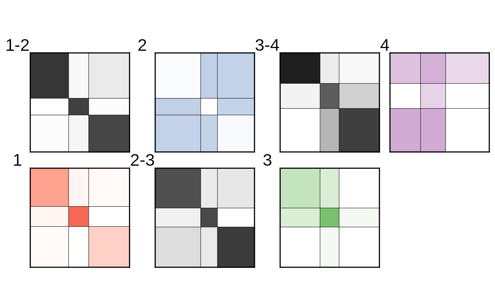

vignettes/generalized-multilevel-networks.Rmd
generalized-multilevel-networks.RmdThis vignette shows how to use the MLVSBM package to
deal with generalized multilevel networks. This is done by modeling
these networks with an ad-hoc Stochastic Block Model. The
mathematical details can be found at http://www.theses.fr/en/2022UPASM005
(Chapter 2.E).
A diagonal acyclic graph of the model for a graph with \(L\) levels is provided below.
A^1 A^{L-1}
| |
v v
Z^1 --> Z^2 --> ... --> Z^L
| | |
v v v
X^1 --> X^2 --> ... --> X^LA temporal network with the same nodes at each time is a particular case of generalized multilevel networks with diagonal affiliation matrices.
Assume that we have a generalized multilevel networks with \(4\) levels, each between \(80\) and \(100\) nodes and \(3\) latent blocks. The description of the levels are the following:
The stability of clusters between levels is quite strong as 80% of the nodes belonging to the same cluster in a level will also be grouped together on the next level.
We set the simulation parameters:
n <- 100
L <- 4
alpha <- list(
diag(.4, 3, 3) + .1,
-diag(.3, 3, 3) + .4,
matrix(c(.8, .2, .1,
.4, .4, .1,
.2, .1, .1), 3, 3),
matrix(c(.3, .5, .5,
.1, .4, .5,
.1, .3, .1), 3, 3)
)
alpha[[1]][1,1] <- .8
alpha[[1]][3,3] <- .3
gamma <- lapply(seq(3),
function(m) matrix(c(.8, .1, .1,
.1, .8, .1,
.1, .1, .8), 3, 3, byrow = TRUE))
pi <- list(c(.2, .3, .5), NULL, NULL, NULL)
directed = c(FALSE, FALSE, FALSE, TRUE)The network can then be simulated.
set.seed(1234)
gmlv <- mlvsbm_simulate_generalized_network(
n = rep(n, 4) - c(20,20,0,0), # Number of nodes
Q = rep(3, 4), # Number of blocks
pi = pi, # Mixture parameters
gamma = gamma, # Affiliation paramters
alpha = alpha, # Connectivity paramters
directed = directed,
distribution = rep("bernoulli", 4))By doing this we simulated a generalized multilevel network with \(4\) adjacency matrices and \(3\) affiliation matrices.
str(gmlv$adjacency_matrix)
#> List of 4
#> $ : num [1:80, 1:80] 0 0 0 0 0 0 1 0 1 0 ...
#> $ : num [1:80, 1:80] 0 0 0 1 0 1 1 1 0 0 ...
#> $ : num [1:100, 1:100] 0 0 0 1 0 1 0 0 0 1 ...
#> $ : num [1:100, 1:100] 0 1 1 0 0 0 1 1 1 1 ...
str(gmlv$affiliation_matrix)
#> List of 3
#> $ : num [1:80, 1:80] 0 0 0 0 0 0 0 0 0 0 ...
#> $ : num [1:100, 1:80] 0 0 0 0 0 0 0 0 0 0 ...
#> $ : num [1:100, 1:100] 0 0 0 0 0 0 0 0 0 0 ...We create a generalized multilevel network from the simulated data,
my_gmlv <- mlvsbm_create_generalized_network(X = gmlv$adjacency_matrix,
A = gmlv$affiliation_matrix,
directed = directed,
distribution = rep("bernoulli", 4))then we can fit the model with an initialization of just one block for each level:
fit_from_scratch <- mlvsbm_estimate_generalized_network(gmlv,
init_clustering = lapply(seq(4),
function(x)rep(1, n)),
init_method = "merge_split",
nb_cores = 1L,
fit_options = list(ve = "joint")
)
#> [1] "======= # Blocks : 1, 1, 1, 1, ICL : -12220.6529663515========"
#> [1] "======= # Blocks : 2, 1, 1, 1, ICL : -12127.4888258263========"
#> [1] "======= # Blocks : 2, 2, 1, 1, ICL : -12068.6650821436========"
#> [1] "======= # Blocks : 2, 2, 2, 1, ICL : -11873.9762196481========"
#> [1] "======= # Blocks : 2, 2, 2, 2, ICL : -11534.4113497037========"
#> [1] "======= # Blocks : 3, 2, 2, 2, ICL : -11459.1381283323========"
#> [1] "======= # Blocks : 3, 3, 2, 2, ICL : -11446.4176112849========"
#> [1] "======= # Blocks : 3, 3, 3, 2, ICL : -11403.4416146134========"
#> [1] "======= # Blocks : 3, 3, 3, 3, ICL : -11058.126446938========"
#> [1] "ICL for interdependent levels : -11058.126446938"Or by first fitting an independent SBM on each level, and precising that we need 3 blocks on each level:
fit <- mlvsbm_estimate_generalized_network(gmlv,
nb_clusters = rep(3, 4),
nb_cores = 1L,
fit_options = list(ve = "sequential"))
#> 0/1:
#> 0/1:
#> 0/2:
#> 0/2:
#> 0/3:
#> 0/3:
#> 0/4:
#> 0/4:
#> [1] "====== Searching neighbours...========"
#> [1] "====== Back to desired model size...======="
#> [1] "======= # Blocks : 3, 3, 3, 3, ICL : -11058.1265367866========"
#> [1] "ICL for interdependent levels : -11058.1265367866"We can then plot the fitted structure:
plot(fit_from_scratch)
Or compared for each level, the inferred clustering with the simulated one with ARI (1 for perfect recovery, 0 for clustering by chance):
paste(
"ARI for level", seq(L), ":",
round(sapply(seq(L),
function(l) ARI(x = gmlv$memberships[[l]],
y = fit_from_scratch$Z[[l]])), 2)
)
#> [1] "ARI for level 1 : 1" "ARI for level 2 : 1" "ARI for level 3 : 0.96"
#> [4] "ARI for level 4 : 1"Or compare the inferred clustering from our two methods of inference with ARI: